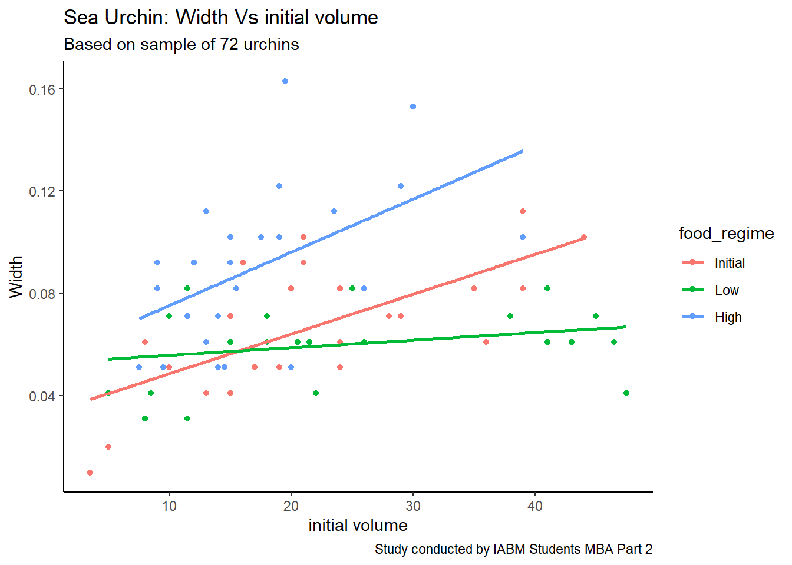
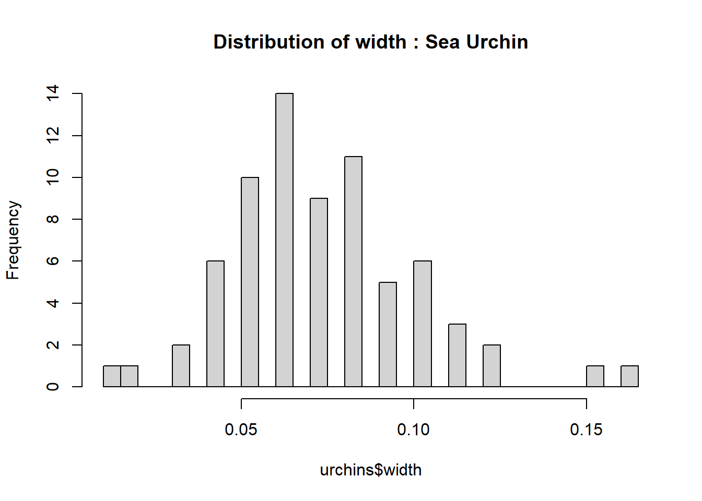
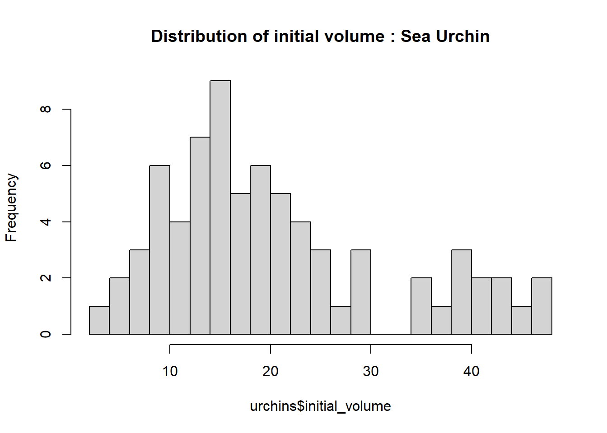

Let’s understand term machine learning. According to Dave Bergmann of IBM, Machine learning is a subset of AI where algorithms learn patterns from training data to make inferences about new data without explicit instructions. This pattern recognition ability enables machine learning models to make decisions or predictions without explicit, hard-coded instructions.
Though “machine learning” and “artificial intelligence” are often used interchangeably, they are not quite synonymous. In short: all machine learning is AI, but not all AI is machine learning.
Machine learning works through mathematical logic. The relevant characteristics (or “features”) of each data point must therefore be expressed numerically, so that the data itself can be fed into a mathematical algorithm that will “learn” to map a given input to the desired output. The (often manual) process of choosing which aspects of data to use in machine learning algorithms is called feature selection. Feature extraction techniques refine data down to only its most relevant, meaningful dimensions.
6.2 Types of machine learning
All machine learning methods can be categorized as one of three distinct learning paradigms: supervised learning, unsupervised learning or reinforcement learning, based on the nature of their training objectives and (often but not always) by the type of training data they entail.
Supervised learning trains a model to predict the “correct” output for a given input. It applies to tasks that require some degree of accuracy relative to some external “ground truth,” such as classification or regression. Unsupervised learning trains a model to discern intrinsic patterns, dependencies and correlations in data. Unlike in supervised learning, unsupervised learning tasks don’t involve any external ground truth against which its outputs should be compared.
Reinforcement learning (RL) trains a model to evaluate its environment and take an action that will garner the greatest reward. RL scenarios don’t entail the existence of a singular ground truth, but they do entail the existence of “good” and “bad” (or neutral) actions.
6.2.1 Supervised learning
Supervised learning algorithms train models for tasks requiring accuracy, such as classification or regression. Supervised machine learning powers both state-of-the-art deep learning models and a wide array of traditional ML models still widely employed across industries.
Regression models predict continuous values, such as price, duration, temperature or size. Examples of traditional regression algorithms include linear regression, polynomial regression and state space models.
Classification models predict discrete values, such as the category (or class) a data point belongs to, a binary decision or a specific action to be taken. Examples of traditional classification algorithms include support vector machines (SVMs), Naïve Bayes and logistic regression.
Many supervised ML algorithms can be used for either task. For instance, the output of what’s nominally a regression algorithm can subsequently be used to inform a classification prediction.
6.3 Machine Learning Case Study
A Japanese company - selling packed sea urchin based food preps. Recently Japanese Food Regulation Authority made sea urchin based food manufacturing more stringent and adherence to nutritional consistency more stringent.
Till now, company was receiving sea urchin supplies from local fishermen. Company washes, preserves and packages the sea urchins and sends in the market. In this process, the sea urchin’s nutritional values were not managed by company as they just collect and market them. Due to difference in quality, there were various voices raised by the food experts so that people get consistent quality.
Company management decides to introduce a 30 day feed plan for the supplies of the sea urchins before they are packed and sent to the market. So, they wanted an real world evidence of a diet plan that can make sea urchins width equal and consistent. The company wants to calibrate width and initial volume vs. the food regime. The data collected is shown below:
library(tidymodels)
Warning: package 'tidymodels' was built under R version 4.4.3
── Column specification ────────────────────────────────────────────────────────
Delimiter: ","
chr (1): TREAT
dbl (2): IV, SUTW
ℹ Use `spec()` to retrieve the full column specification for this data.
ℹ Specify the column types or set `show_col_types = FALSE` to quiet this message.
To keep the diet regime composition secret, company codifies the three levels of diets as Initial, Low and High. Number of observations in the data is 72.
Let’s plot the data:
library(ggplot2)ggplot(urchins,aes(x=initial_volume, y=width, colour = food_regime)) +geom_point() +geom_smooth(method = lm, se =FALSE) +labs(title="Sea Urchin: Width Vs initial volume",y ="Width",x ="initial volume",subtitle ="Based on sample of 72 urchins",caption ="Study conducted by IABM Students MBA Part 2") +theme_classic()
`geom_smooth()` using formula = 'y ~ x'

If we observe the plot, we can see that food regime has different effect for the width vs initial volume relationship. This gives us an indication that food regime interacts with width and initial volume relationship. This a significant information for building a machine learning model. Since the slopes appear to be different for at least two of the feeding regimes, let’s build a model that allows for two-way interactions. Specifying an R formula with our variables in this way:
width ~ initial_volume * food_regime
We can also check the distribution of width and initial volume acorss the sample:
hist(urchins$width, main="Distribution of width : Sea Urchin", n=30)

hist(urchins$initial_volume, main="Distribution of initial volume : Sea Urchin", n=30)

We can see that the distribution of the width and initial volume of sea urchin sample is near to normal bell shaped curve. We can check normality of a variable through statistical tests also:
Shapiro-Wilk normality test
data: urchins$width
W = 0.95726, p-value = 0.01552
shapiro.test(urchins$initial_volume)
Shapiro-Wilk normality test
data: urchins$initial_volume
W = 0.91466, p-value = 0.0001247
To check the assumption of normality, Shapiro-Wilk tests were conducted on the sample of 72 urchins. The results indicated that the distribution of initial volume (W = 0.91, p < .001) and width (W = 0.96, p = .016) both significantly deviated from normality.
Let’s also check for missing values in the data:
sum(is.na(urchins))
[1] 0
So, there is no missing values in the dataset.
The width and initial_volume both are numerical variables and we want to predict width based on initial_volume subject to food_regime. This can be modeled with linear regression model. Following command chunck shows this:
Another way of building model is using Bayesian approach. In Bayesian approach, the prior distribution is used to build model. Here we need to first declare prior probabilities first and then, we do model building using different engine.
# set the prior distributionprior_dist <- rstanarm::student_t(df =1) # Setting up prior probability using t distributionset.seed(123)# make the parsnip modelbayes_mod <-linear_reg() |>set_engine("stan", # Engine for Bayesian modelprior_intercept = prior_dist,prior = prior_dist,refresh =0)# train the modelbayes_fit <- bayes_mod |>fit(width ~ initial_volume * food_regime, data = urchins)print(bayes_fit, digits =5)
parsnip model object
stan_glm
family: gaussian [identity]
formula: width ~ initial_volume * food_regime
observations: 72
predictors: 6
------
Median MAD_SD
(Intercept) 0.03305 0.00983
initial_volume 0.00155 0.00040
food_regimeLow 0.02026 0.01327
food_regimeHigh 0.02111 0.01467
initial_volume:food_regimeLow -0.00128 0.00051
initial_volume:food_regimeHigh 0.00053 0.00071
Auxiliary parameter(s):
Median MAD_SD
sigma 0.02134 0.00190
------
* For help interpreting the printed output see ?print.stanreg
* For info on the priors used see ?prior_summary.stanreg